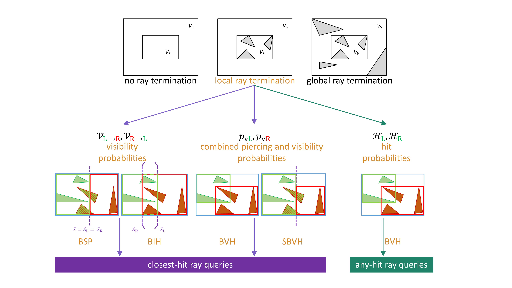

The Visual Computer, Volume 35, Issue 12, December 2019 (First online: July 2018)
On the Use of Local Ray Termination for Efficiently Constructing Qualitative BSPs, BIHs and (S)BVHs
Computer Graphics Research Group,
Department of Computer Science,
KU Leuven

Abstract
Acceleration data structures (ADSs) exploit spatial coherence by distributing a scene's geometric primitives into spatial groups, effectively reducing the cost of ray tracing queries. The most effective ADSs are hierarchical, adaptive tree structures such as BSPs, BIHs and (S)BVHs. The de facto standard cost metric for building these structures is the Surface Area Heuristic (SAH), which assumes a scene-exterior isotropic ray distribution of non-terminating rays. Despite its restrictive assumptions, the SAH remains competitive against many fundamentally different cost metrics.
Our goal is to adapt the SAH by introducing local ray termination into voxel partitioning during ADS construction and voxel traversal ordering. We develop efficient heuristics to approximate local ray termination without additional preprocessing. These heuristics are used for the Ray Termination Surface Area Heuristic (RTSAH) for BSPs, BIHs and (S)BVHs for closest-hit queries, and for the Shadow Ray Distribution Heuristic (SRDH) for BVHs for any-hit queries.
Results indicate rendering performance close to SAH on average, with small gains in ray-triangle intersection tests and ADS node traversal. Prerendering build times are higher for the RTSAH due to triangle clipping.
Paper and Supplementary Material